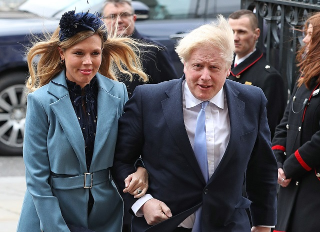
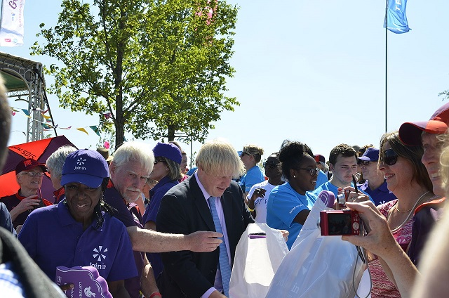
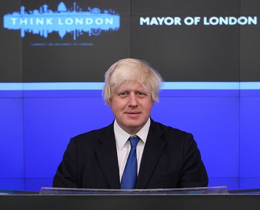
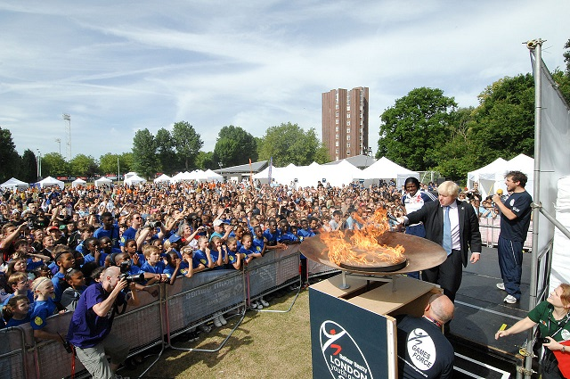
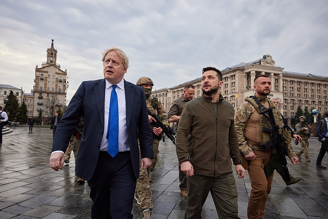

Alexander Boris de Pfeffel Johnson (/ˈfɛfəl/;[5] born 19 June 1964) is a British politician who has served as Prime Minister of the United Kingdom and Leader of the Conservative Party since 2019. He announced his pending resignation on 7 July 2022 and will remain as prime minister until a new party leader is elected. He served as Secretary of State for Foreign and Commonwealth Affairs from 2016 to 2018 and as Mayor of London from 2008 to 2016. Johnson has been Member of Parliament (MP) for Uxbridge and South Ruislip since 2015, having previously been MP for Henley from 2001 to 2008. Johnson attended Eton College and read Classics at Balliol College, Oxford. He was elected president of the Oxford Union in 1986. In 1989, he became the Brussels correspondent—and later political columnist—for The Daily Telegraph; and from 1999 to 2005 was editor of The Spectator. Following his election to parliament in 2001, Johnson was a shadow minister under Conservative leaders Michael Howard and David Cameron. In 2008, he was elected mayor of London and resigned from the House of Commons; he was re-elected as mayor in 2012. In the 2015 general election, Johnson was elected MP for Uxbridge and South Ruislip. The following year, he did not seek re-election as mayor. He became a prominent figure in the successful Vote Leave campaign for Brexit in the 2016 European Union (EU) membership referendum. Theresa May appointed him foreign secretary after the referendum; he resigned the position two years later in protest to the Chequers Agreement and May's approach to Brexit. In 2019, Johnson was elected Leader of the Conservative Party, defeating Jeremy Hunt. He re-opened Brexit negotiations and in early September controversially prorogued Parliament; the Supreme Court later that month ruled the action unlawful.[b] After agreeing to a revised Brexit withdrawal agreement, which replaced the Irish backstop with a new Northern Ireland Protocol, but failing to win parliamentary support for the agreement, Johnson called a snap election for December 2019 in which he led the Conservative Party to victory with 43.6 per cent of the vote, and the party's largest seat share since 1987. On 31 January 2020, the United Kingdom withdrew from the EU, entering into a transition period and trade negotiations leading to the EU–UK Trade and Cooperation Agreement. The COVID-19 pandemic became a major issue of his premiership; the government responded by introducing various emergency powers and measures across society to mitigate the pandemic's impact, and approved the rollout of a nationwide vaccination programme. In December 2021, a controversy known as "Partygate" began which concerned Johnson and other government officials attending social gatherings at which some attendees breached COVID-19 regulations; Johnson received a fixed penalty notice, becoming the first prime minister of the United Kingdom to be sanctioned for breaking the law while in office. The publishing of the Sue Gray report and a widespread sense of dissatisfaction led in June 2022 to a vote of confidence in his leadership among Conservative MPs. While the parliamentary Conservative Party was found to have confidence in him, the result was regarded as having left Johnson politically weakened. In July 2022, revelations over his hiring of Chris Pincher as Deputy Chief Whip led to a mass resignation of ministers from his government and to Johnson announcing his forthcoming resignation as party leader. He remains in office in a caretaker capacity pending a leadership election. Johnson is a controversial figure in British politics.[7][8] Supporters have praised him as humorous, witty, and entertaining,[9] with an appeal stretching beyond traditional Conservative Party voters.[10][11] Conversely, his critics have accused him of lying, elitism, cronyism and bigotry.[12][13][14] Johnson's political positions have sometimes been described as following one-nation conservatism, and commentators have characterised his political style as opportunistic, populist, or pragmatic.[15][16][17]
Contents
- Early life
- Childhood
- Eton and Oxford: 1977–1987
- Early career
- The Times and The Daily Telegraph: 1987–1994
- Political columnist: 1994–1999
- The Spectator and MP for Henley: 1999–2008
- Becoming an MP
- Second term
- 3 Mayor of London (2008–2016)
- Mayoral election: 2007–2008
- First term: 2008–2012
- Policies
- Relations with police, finance, and the media
- Re-election campaign
- Second term: 2012–2016
Becoming an MP
Following Michael Heseltine's retirement, Johnson decided to stand as Conservative candidate for Henley, a Conservative safe seat in Oxfordshire.[146] The local Conservative branch selected him although it was split over Johnson's candidacy. Some thought him amusing and charming while others disliked his flippant attitude and lack of knowledge of the local area.[147] Boosted by his television fame, Johnson won the seat in the 2001 general election with a majority of 8,500 votes.[148] Alongside his Islington home, Johnson bought a farmhouse outside Thame in his new constituency.[149] He regularly attended Henley social events and occasionally wrote for the Henley Standard.[150] His constituency surgeries proved popular, and he joined local campaigns to stop the closure of Townlands Hospital and the local air ambulance.[151] In Parliament, Johnson was appointed to a standing committee assessing the Proceeds of Crime Bill, but missed many of its meetings.[152] Despite his credentials as a public speaker, his speeches in the House of Commons were widely deemed lacklustre; Johnson later called them "crap".[153] In his first four years as MP, he attended just over half of the Commons votes; in his second term, this declined to 45 per cent.[154] He usually supported the Conservative party line but rebelled against it five times in this period.[155] In free votes, he demonstrated a more socially liberal attitude than many colleagues, supporting the Gender Recognition Act 2004 and the repeal of Section 28.[156][157] However, in 2001, Johnson had spoken out against plans to repeal Section 28, saying it was "Labour's appalling agenda, encouraging the teaching of homosexuality in schools".[158][159] After initially stating he would not, he voted in support of the government's plans to join the US in the 2003 invasion of Iraq,[149] and in April 2003 visited occupied Baghdad.[160] In August 2004, he backed unsuccessful impeachment procedures against Prime Minister Tony Blair for "high crimes and misdemeanours" regarding the war,[161] and in December 2006 described the invasion as "a colossal mistake and misadventure".[162] Although labelling Johnson "ineffably duplicitous" for breaking his promise not to become an MP, Black decided not to dismiss him because he "helped promote the magazine and raise its circulation".[163] Johnson remained editor of The Spectator, also writing columns for The Daily Telegraph and GQ, and making television appearances.[164] His 2001 book, Friends, Voters, Countrymen: Jottings on the Stump, recounted that year's election campaign,[165] while 2003's Lend Me Your Ears collected together previously published columns and articles.[166] In 2004, Harper Collins published his first novel: Seventy-Two Virgins: A Comedy of Errors revolved around the life of a Conservative MP and contained various autobiographical elements.[167] Responding to critics who argued he was juggling too many jobs, he cited Winston Churchill and Benjamin Disraeli as exemplars who combined their political and literary careers.[168] To manage the stress, he took up jogging and cycling,[169] and became so well known for the latter that Gimson suggested he was "perhaps the most famous cyclist in Britain".[170] Following William Hague's resignation as Conservative leader, Johnson backed Kenneth Clarke, regarding Clarke as the only candidate capable of winning a general election; the party elected Iain Duncan Smith.[171] Johnson had a strained relationship with Duncan Smith, and The Spectator became critical of his party leadership.[172] Duncan Smith was removed from his position in November 2003 and replaced by Michael Howard; Howard deemed Johnson to be the most popular Conservative politician with the electorate and appointed him vice-chairman of the party, responsible for overseeing its electoral campaign.[173] In his Shadow Cabinet reshuffle of May 2004, Howard appointed Johnson to the position of shadow arts minister.[174] In October, Howard ordered Johnson to apologise publicly in Liverpool for publishing a Spectator article—anonymously written by Simon Heffer – which said the crowds at the Hillsborough disaster had contributed towards the incident and that Liverpudlians had a predilection for reliance on the welfare state.[175][176] In November 2004, tabloids revealed that since 2000 Johnson had been having an affair with Spectator columnist Petronella Wyatt, resulting in two terminated pregnancies. Johnson initially called the claims "an inverted pyramid of piffle".[177] After the allegations were proven, Howard asked Johnson to resign as vice-chairman and shadow arts minister for publicly lying; when Johnson refused, Howard dismissed him from those positions.[178][179] In July 2005, Who's the Daddy?, a play by The Spectator's theatre critics Toby Young and Lloyd Evans being performed at Islington's King's Head Theatre, satirised the scandal.[180]
Johnson with his then-fiancée Carrie Symonds at the 2020 Commonwealth Day service
Personal life
Since Johnson was born in New York City to British parents, he first held British-American dual citizenship. In 2014, he acknowledged he was disputing a demand for capital gains tax from the US tax authorities on a property that he inherited in the United Kingdom,[801][802] which ultimately he paid.[803] In February 2015, he announced his intention to renounce his US citizenship to demonstrate his loyalty to the UK,[804] which he did in 2016.[805] Johnson has a knowledge of French, Italian, German, Spanish,[90] Latin, and Ancient Greek,[806] frequently employing and alluding to classical references in both his newspaper columns and his speeches.[778] His favourite film is The Godfather, due to "the multiple retribution killings at the end".[807] Purnell wrote that Johnson was a "highly evasive figure" when it came to his personal life,[808] who remained detached from others and who had very few if any intimate friends.[809] Among friends and family, Johnson is more commonly known as Al (short for his forename Alexander), rather than his middle name Boris.[810] In 2007, Johnson said he had smoked cannabis before he went to university.[811] He has also said he had used cocaine.[812] Johnson partakes in cycling, tennis and pilates, and was formerly an avid runner before having to give it up due to knee issues.[813] Johnson's weight has fluctuated throughout his career; he was considered obese in 2018 and overweight in 2020, and has spoken of making efforts to lose weight.[813][814] Johnson owns a £1.3 million buy-to-let townhouse in Camberwell, South London. According to HM Land Registry documents, he bought the four-bedroom property with his then-girlfriend Carrie Symonds in July 2019. The register of MPs' interests states that Johnson has a rental income of at least £10,000 a year.[8

Russia and Ukraine
In November 2021, Johnson warned that the European Union faces "a choice" between "sticking up for Ukraine" and approving the Nord Stream 2 natural gas pipeline which runs from Russia to Europe.[692] During the 2021–2022 Russo-Ukrainian crisis, Johnson's government warned the Russian Government not to invade Donbas.[693][694][695] Despite this, Johnson's Foreign Secretary Liz Truss told BBC News that British troops were "unlikely" to be deployed.[696] In a phone call to President Vladimir Putin, Johnson urged him to "avoid bloodshed".[697] Johnson and Putin agreed in a phone call to work towards a "peaceful resolution".[698] On 1 February 2022, Johnson arrived in Kyiv on a diplomatic visit.[699] He called the presence of the Russian Armed Forces near the Russia–Ukraine border "the biggest security crisis that Europe has faced for decades".[700] The Kremlin denied that it wanted to attack Ukraine.[700] On 14 February 2022, Johnson warned an invasion of Ukraine could take place within 48 hours.[701] On 20 February 2022, Johnson warned that Russia is planning the "biggest war in Europe since 1945" as Putin intends to invade and encircle the capital of Kyiv.[702] On 21 February 2022, Johnson condemned Russia's diplomatic recognition of two self-proclaimed separatist republics in Donbas.[703] Johnson condemned the 2022 Russian invasion of Ukraine, and ensured the UK joined in international sanctions on Russian banks and oligarchs.[704] He later announced the UK would phase out Russian oil by the end of 2022.[705] On 9 April 2022, Johnson travelled to Kyiv and met the President of Ukraine, Volodymyr Zelenskyy.[706] On 16 April 2022, Russia's Ministry for Foreign Affairs banned Johnson and a number of senior British politicians, including cabinet members, from visiting Russia, saying that Britain aimed to isolate Russia politically and supply "the Kyiv regime with lethal weapons and coordinating similar efforts on the part of NATO".[707] Within Ukraine, Johnson is praised by many as a supporter of anti-Russian sanctions and military aid for Ukraine.[708] The defence secretary Ben Wallace said on 25 April that the UK had provided £200m in military aid to Ukraine.[709] On 3 May, Johnson virtually addressed the Ukrainian parliament, becoming the first world leader to speak in Ukraine since the invasion. In his speech, he pledged an extra £300m in military aid to Ukraine, praised Ukraine's resistance to Russia as its "finest hour" and said that the West had been "too slow to grasp what was actually happening" prior to Russia's invasion.[710][711] In August 2022, Johnson blamed Vladimir Putin for the emerging global energy crisis, saying that Putin wanted the UK to "buckle" in the face of "eye-watering" energy price rises.[712]
